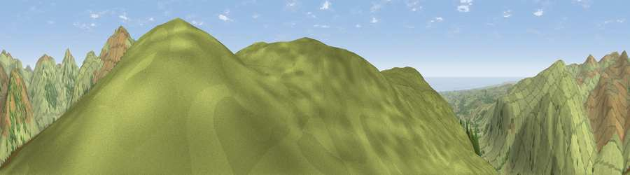

Illgill Head (summit)
#1165 in England · top 12% of its area beats it · near BootThe view, rendered

A 360° render of this exact spot computed from the terrain model, tree cover and land cover — summer colours, afternoon light, calibrated against photographs of famous viewpoints. Real trees, hedges and buildings will differ in detail.
The panorama
Grey silhouette: terrain skyline in each direction (720 bearings, Earth curvature and refraction included). Dashed green: skyline with trees (+15 m) and buildings (+8 m) as obstacles. Blue strip: how far the ground is visible on each bearing.
Where the view opens
Wedge length = distance to the farthest visible ground on that bearing (vegetation-aware). Rings at 10, 25 and 50 km.
What fills the view
65% grassland · 23% water · 12% woodland
Angular shares of the visible panorama (visual magnitude), not map area. Landscape diversity 0.39 (0–1 Shannon).
Key numbers
More beautiful places nearby
The staircase of upgrades: each row has a higher view potential than everything closer. Driving times are estimates from straight-line distance, calibrated against real road routing — check an actual route before setting out.
| Place | Direction | Drive | Score |
|---|---|---|---|
| Illgill Head | SW · 0 km | ~1 min | 88.4 |
| Viewpoint near Boot | SW · 1 km | ~2 min | 88.9 |
| Crag Fell | NW · 12 km | ~22 min | 89.1 |
| Long Side | NNE · 25 km | ~40 min | 89.5 |
| Viewpoint near Finsthwaite | SE · 28 km | ~44 min | 90.3 |
| The Knoll | S · 419 km | ~397 min | 91.0 |
54.43425, -3.28435 · source: osm peak · position refined by local search. Computed location — check access rights before visiting.